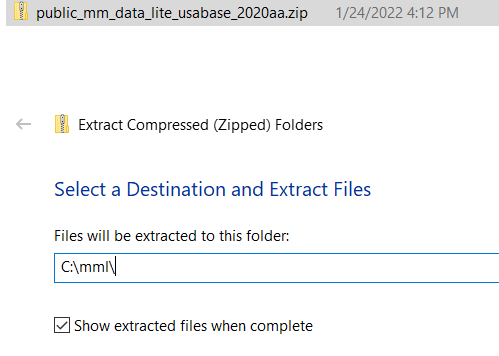

Installing MetaMapLite
Contents
Installing MetaMapLite¶
These instructions are for installing Metamaplite on Windows. Most of these steps would likely be pretty similar on other systems…
In Brief¶
A brief overview/reminder of the steps.
Go to the MetaMapLite homepage.
Download MetaMapLite ‘binaryonly Version’.
Download UMLS Dataset.
Unzip both downloads to the same directory (e.g.,
C:\mml).Test the installation
cd C:\mml\public_mm_liteecho "asymptomatic patient populations" | .\metamaplite.bat --pipe
For more usage information, see Using MetaMapLite.
Prerequisites¶
There is a complete and updated list of prerequisites on the MetaMapLite homepage, but the main components are:
UMLS Terminology Services (UTS) Account
Java 8 (JRE is fine)
From Oracle: https://www.java.com/en/download/
Amazon Corretto: https://docs.aws.amazon.com/corretto/latest/corretto-8-ug/downloads-list.html
UMLS License¶
If you already have a UMLS Terminology Services account, skip this step.
UTS Account Required
An account is required in order to use the UMLS Metathesaurus (the vocabulary backend to Metamaplite which MetaMapLite uses to map text to NLP concepts).
To create an account, visit: https://uts.nlm.nih.gov/uts/signup-login.
By doing this, you will agree to the UMLS License: https://uts.nlm.nih.gov/uts/assets/LicenseAgreement.pdf
To keep your account current (i.e., to keep being able to use it), you will need to annually complete a survey describing which sources, etc., you used, along with any suggestions for improvements.
Install Java¶
The current requirements for running MetaMapLite are Java 8 JRE (JDK is okay as well).
There are a few locations from which to install the Java runtime:
From Oracle: https://www.java.com/en/download/
From Amazon (Corretto): https://docs.aws.amazon.com/corretto/latest/corretto-8-ug/downloads-list.html
Or other implementations of OpenJDK: https://en.wikipedia.org/wiki/OpenJDK#OpenJDK_builds
Once Java is installed, test the installation:
Open a new
powershellor other command prompt.Type
java -version.If you get some information about the version, you’re good to go.
If you get some variant of ‘not recognized’ or ‘command not found’, you’ll need to add Java to your path.
To add java to your path:
Windows Button+ type ‘environment’Edit the system environment variablesEnvironment VariablesAdd
Newwith nameJAVA_HOMEand path to base of installEdit the
PATHvariable by adding the entire path with\binto thePATHvariableExit out of all command prompts (e.g.,
powershell), and open a new one. Typejava.
Download and Install¶
Visit the Metamaplite Website. If this links is broken, file an issue and search for ‘metamaplite’.
Go to ‘Downloads’ and find the box with the most recent version of MetaMapLite.

Download MetaMapLite¶
Download the most recent version of MetaMapLite (
3.6.2rc6in the above image).If you have previously installed MetaMapLite, you do not need to update, but it’s usually a good idea.
You may require a particular version if, e.g., replicating previous work.
Login with your UTS Account if you are not already logged in.
Right clickthe downloaded zip archive, and chooseExtract AlltoC:\mml(or similar)
MetaMapLite has now been installed to
C:\mml\public_mm_lite. This is the application’sHOME_DIRECTORYand will be used in most of themml_utilsscripts.
You have now installed MetaMapLite, though it doesn’t have any data, so it’s probably not particularly useful yet…let’ s install the UMLS backend.
Download UMLS Dataset¶
Download the most recent version of the UMLS Level 0+4+9 dataset (
2020AB UMLS Level 0+4+9 Datasetin the image above).Login with your UTS Account if you are not already logged in.
Right clickthe downloaded zip archive, and chooseExtract AlltoC:\mml(or the same path you selected when unzipping MetaMapLite)
Multiple UMLS Datasets
You can download multiple datasets to the same MetaMapLite installation, though each will require a different name/location. Selecting these can be done by editing the metamaplite.bat launch file or the config\metamaplite.properties file’s metamaplite.index.directory.

No indexing is required for this download, but you should first test the installation.
Downloading Other UMLS Vocabularies¶
If you need other UMLS vocabularies (e.g., MedDRA), you will need to download, install, and index the larger UMLS dataset. A step-by-step guide for this is available here.
Test the Installation¶
Open a new
powershellwindows (or other command prompt).Go to the HOME_DIRECTORY (
cd C:\mml\public_mm_lite).Run
echo "asymptomatic patient populations" | .\metamaplite.bat --pipeYou should see output like:
00000000.tx|MMI|0.92|Patients|C0030705|[podg]|"Patient"-text-0-"patient"-NN-0|text|13/7|M01.643|
00000000.tx|MMI|0.46|Asymptomatic|C0231221|[fndg]|"Asymptomatic"-text-0-"asymptomatic"-JJ-0|text|0/12||
00000000.tx|MMI|0.46|Disabled Person Code - Patient|C1578486|[inpr]|"Patient"-text-0-"patient"-NN-0|text|13/7||
00000000.tx|MMI|0.46|Mail Claim Party - Patient|C1578481|[idcn]|"Patient"-text-0-"patient"-NN-0|text|13/7||
00000000.tx|MMI|0.46|Relationship modifier - Patient|C1578484|[idcn]|"Patient"-text-0-"patient"-NN-0|text|13/7||
00000000.tx|MMI|0.46|Report source - Patient|C1578483|[idcn]|"Patient"-text-0-"patient"-NN-0|text|13/7||
00000000.tx|MMI|0.46|Specimen Source Codes - Patient|C1578485|[inpr]|"Patient"-text-0-"patient"-NN-0|text|13/7||
00000000.tx|MMI|0.46|Specimen Type - Patient|C1550655|[bdsu]|"Patient"-text-0-"patient"-NN-0|text|13/7||
00000000.tx|MMI|0.46|Veterinary Patient|C1705908|[orgm]|"Patient"-text-0-"patient"-NN-0|text|13/7||
00000000.tx|MMI|0.46|geographic population|C0032659|[qnco]|"Populations"-text-0-"populations"-NNS-0|text|21/11||
Or, if you prefer
jsonformat (this project does):echo "asymptomatic patient populations" | .\metamaplite.bat --pipe --outputformat=jsonNB: The output below is formatted and abridged.
[
{
"matchedtext": "asymptomatic",
"evlist": [
{
"score": 0,
"matchedtext": "asymptomatic",
"start": 0,
"length": 12,
"id": "ev0",
"conceptinfo": {
"conceptstring": "Asymptomatic",
"sources": [
"LNC",
"CHV",
"SNMI",
"NCI_CDISC",
"NCI",
"SNOMEDCT_US",
"NCI_NCI-GLOSS"
],
"cui": "C0231221",
"preferredname": "Asymptomatic",
"semantictypes": [
"fndg"
]
}
}
],
"docid": "00000000.tx",
"start": 0,
"length": 12,
"id": "en0",
"fieldid": "text"
}
]
For additional details about using MetaMapLite to process text files, see: Using MetaMapLite
Troubleshooting¶
Java Not Recognized/Found¶
Ensure that Java 8 is installed (see Install Java).
Close all instances of
powershellor other command prompt. Open a new one and typejava.